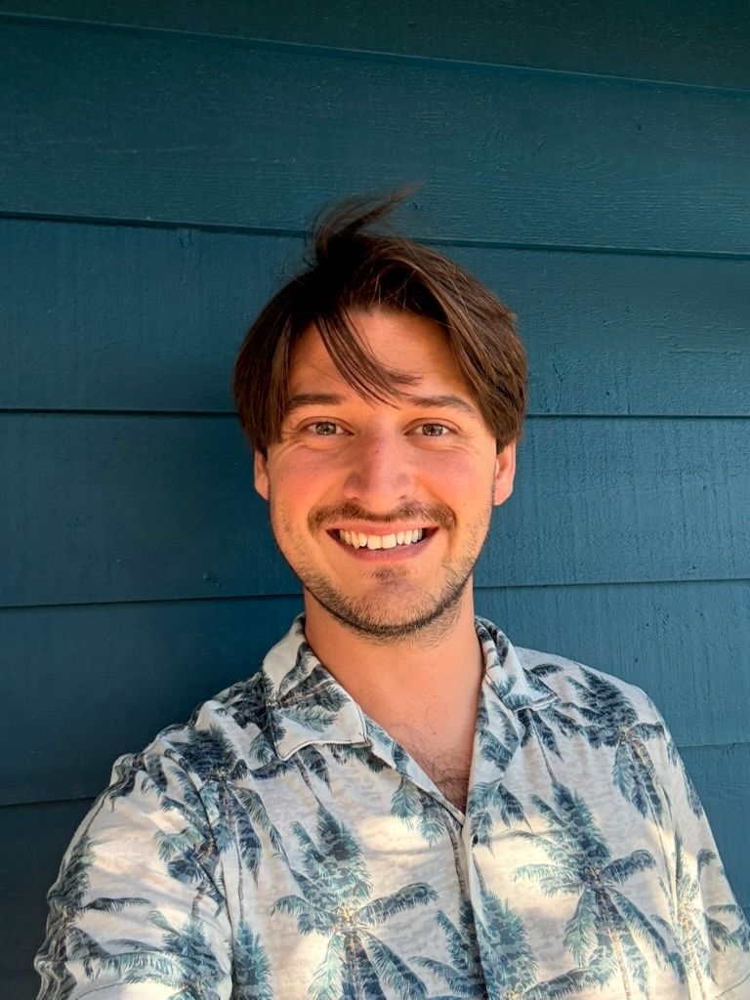

My research interests lie in geometric group theory and low-dimensional topology.
Most of the questions I think about concern the geometry of linear groups in
characteristic zero. In other words, I multiply two-by-two matrices for a living.
I received my PhD from UC Berkeley and my undergraduate degree from UC Santa Barbara.

I am currently organizing a seminar titled Geometry of Linear Groups. At UC Santa Cruz I have taught Number Theory, Graph Theory, College Algebra, and Calculus 2.
Before that, I was a GSI for more than a dozen courses at UC Berkeley, and a TA at UC Santa Barbara. I have also taught for Mt. Tam College at San Quentin State Prison, and the Project for Inmate Education at Santa Cruz Main Jail.